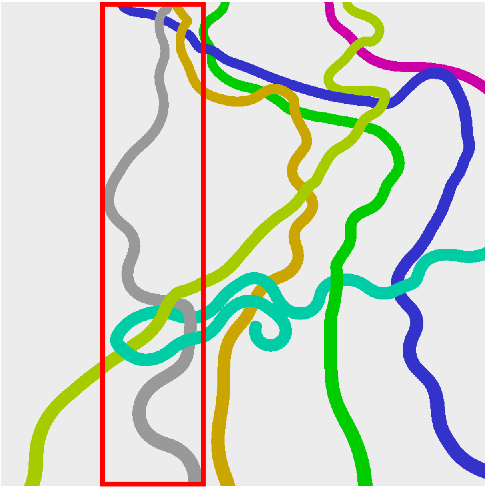
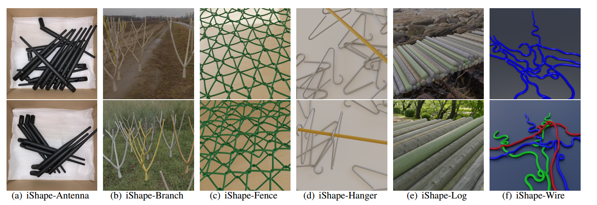
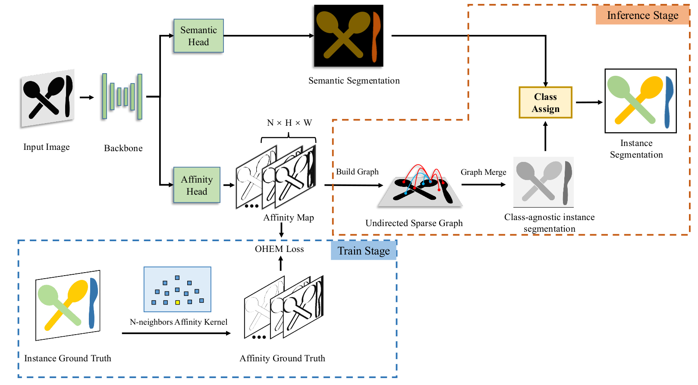

Irregular Shape Instance Segmentation
Lei Yang1 Ziwei Yan2 Wei Sun1 Yisheng He3 Zhenhang Huang4 Haibin Huang5 Haoqiang Fan1
1Megvii Research Beijing, Megvii Technology Ltd., Beijing, China
2School of Software, Beihang University, Beijing, China
3Hong Kong University of Science and Technology, Hong Kong, China
4Beijing University of Chemical Technology, Beijing, China
5Kuaishou Technology, Beijing, China

{kind=link}
{kind=link}
A typical scene of objects with irregular shape and similar appearance. It has many characteristics that challenge instance segmentation algorithms, including the large overlaps between bounding boxes of objects, extreme aspect ratios (bounding box of the grey mask), and large numbers of connected components in one instance (green and blue masks).
Abstract | Paper | Dataset | Baselines | Benchmark | Misc
1. Abstract
In this paper, we introduce a brand new dataset to promote the study of instance segmentation for objects with irregular shapes. Our key observation is that though irregularly shaped objects widely exist in daily life and industrial scenarios, they received little attention in the instance segmentation field due to the lack of corresponding datasets. To fill this gap, we propose iShape, an irregular shape dataset for instance segmentation. Unlike most existing instance segmentation datasets of regular objects, iShape has many characteristics that challenge existing instance segmentation algorithms, such as large overlaps between bounding boxes of instances, extreme aspect ratios, and large numbers of connected components per instance. We benchmark popular instance segmentation methods on iShape and find their performance drop dramatically. Hence, we propose an affinity-based instance segmentation algorithm, called ASIS, as a stronger baseline. ASIS explicitly combines perception and reasoning to solve Arbitrary Shape Instance Segmentation including irregular objects. Experimental results show that ASIS outperforms the state-of-the-art on iShape.
2. Paper
3. Our iShape dataset
In this work, we present iShape, a new dataset designed for irregular Shape instance segmentation. Our dataset consists of six sub-datasets, namely iShape-Antenna, iShape-Branch, iShape-Fence, iShape-Log, iShape-Hanger, and iShape-Wire. As shown in picture below, each sub-dataset represents scenes of a typical irregular shape, for example, strip shape, hollow shape, and mesh shape.

Download iShape dataset (4.5GB):
http://47.103.201.240:9000/ishape/ishape_dataset.tar
Browse iShape dataset online: => ishape_dataset
Dataset format: iShape provides both Cityscapes and COCO style instance segmentation annotations.
- Cityscapes style: store as
*.pngfiles under directoryinstance_map. Similar to*_instanceIds.pngin Cityscapes dataset, those png file are Height * Width * 16bit. Each pixel valuexmeans that the pixel belongs to the instance ID isx. - COCO style: It should be pointed out that the COCO style annotations encode masks by Run-Length Encoding(RLE), because polygon can not represent hollow-shaped masks.
Source code about the dataset:
build_synthetic_ishape: Source code of building iShape synthetic data.bpycv: Computer vision utils for open-source CG software Blender.
Dataset license: Public domain (CC0)

4. Our Baseline: Arbitrary Shape Instance Segmentation
We introduce a stronger baseline considering irregular shape in this paper, which explicitly combines perception and reasoning. Our key insight is to simulate how a person identifies an irregular object. Taking the wire shown in Figure 1 for example, one natural way is to start from a local point and gradually expand by following the wire contour and figure out the entire object. The behavior of such ``following the contour'' procedure is a process of continuous iterative reasoning based on local clues, which is similar to the recent affinity-based approaches . Under such observation, we propose a novel affinity-based instance segmentation baseline, called ASIS, which includes principles of generating effective and efficient affinity kernel based on dataset property to solve Arbitrary Shape Instance Segmentation. Experimental results show that the proposed baseline outperforms existing state-of-the-art methods by a large margin on iShape.

Overview of ASIS. In the training stage, the network learns to predict the semantic segmenation as well as the affinity map where the ground truth of affinity can be generated by affinity kernel and instance ground truth. In the inference stage, the predicted affinity map will be used to construct a sparse and undirected graph, with pixel as node and affinity map as edge. The final instance label then can be generated by applying a class assign module on top of the constructed graph and semantic segmentation map.
Baseline code will release soon.
5. Benchmark
We also benchmark existing instance segmentation algorithms on iShape and find their performance degrades significantly.
5.1 Experimental results
| Method | Backbone | Antenna | Branch | Fence | Hanger | Log | Wire | Average | Config | Download | Code |
|---|---|---|---|---|---|---|---|---|---|---|---|
| SOLOv2 | ResNet-50 | 6.6 | 27.5 | 0.0 | 28.8 | 22.2 | 0.0 | 14.07 | config | model | log | Link |
| PolarMask | ResNet-50 | 0.0 | 0.0 | 0.0 | 0.0 | 18.6 | 0.0 | 3.10 | config | model | log | Link |
| SpatialEmbeddings | - | 38.3 | 0.0 | 0.0 | 49.8 | 20.9 | 0.0 | 18.17 | config | model | log | Link |
| Mask RCNN | ResNet-50 | 16.9 | 4.2 | 0.0 | 22.1 | 32.6 | 0.0 | 12.63 | config | model | log | Link |
| DETR | ResNet-50 | 2.1 | 2.6 | 0.0 | 32.2 | 46.2 | 0.0 | 13.85 | config | model | log | Link |
| ASIS(ours) | ResNet-50 | 77.5 | 25.1 | 37.1 | 53.1 | 69.3 | 64.9 | 54.50 | config | model | log | Link |
5.2 Qualitative results
Qualitative results are => here
6. Misc
If you have any questions about iShape, feel free to submit an issue here: issues.